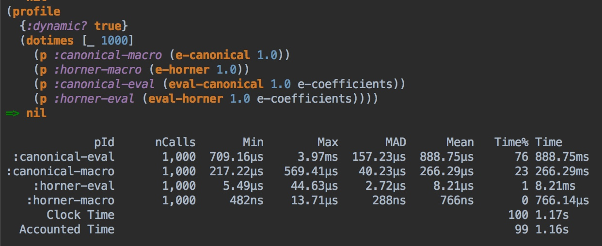

A Polynomial Macro
Introduction
In this edition of the blog I am going to cover a very cool macro for conveniently defining polynomials that is also very performant. It's also a great example of how macros work and when you might want to use one.
Polynomials
In mathematics, a polynomial is a function of the form:
\(p(x) = a_0 + a_1x + a_2x ^2 + a_3x ^3 + \dotsb + a_nx ^n\)
This particular representation is called the canonical form.
Evaluating a polynomial in canonical form takes n additions and \(\frac{(n ^2 + n)}{2}\) multiplications.
A more efficient form of expressing the same polynomial is the Horner form, which takes only n additions and multiplications:
\(p(x) = a_0 + x(a_1 + x(a_2 + \dotsb + x(a_{n-1} + a_nx)))\)
In Clojure, here is how you'd write a polynomial in both canonical and Horner forms:
(ns poly.core$macros
(:require [cljs.js :as cljs]))
(defn poly-canonical [t]
(+ 134.96340251
(* t 477198.8675605)
(* t t 0.0088553)
(* t t t 1.4343E-5)))
(defn poly-horner [t]
(+ 134.96340251
(*
(+ 477198.8675605
(*
(+ 0.0088553
(* 1.4343E-5 t))
t))
t)))
;Either form gives the same result
[(poly-canonical 0.0426236319) (poly-horner 0.0426236319)]
I believe the canonical form is easer to read and code, but the Horner form should run faster as there are less operations involved. In this case, n is only 3, so there are 9 arithmetic operations for the canonical formula and 6 for the Horner. If you were to profile them you'd probably not see any distinguishable difference between the two.
You should see larger differences in performance with higher n, but at this point in the post I have no way to create a large polynomial other than hand coding it, so I'll defer that task for now.
As for demonstrating the relative performance of the functions I'll be developing, we'll use the rank function below.
(defn time-fn[n-samples f]
(let[t0 (.now js/performance)
_ (dotimes[_ n-samples] (f))]
(- (.now js/performance) t0)))
(defn normalize-scores [res]
(let[[[_ b ] :as v] (sort-by second res)]
(mapv (fn[[k v]] [k (/ v b)]) v)))
(defn rank[n & args]
(loop[[k f & r] args res []]
(if (and k f)
(recur r (conj res [k (time-fn n f)]))
(normalize-scores res))))
Now that we've got our comparison function, let's try it out:
(rank
1000
:canonical #(poly-canonical 0.0426236319)
:horner #(poly-horner 0.0426236319))
Take some time to play around with the number of samples here. I've intentionally used lower numbers in this post so the klipse workspace won't take forever to load. You will likely see the Horner form slightly outperform the canonical method for large sample sizes, but sometimes you may see the canonical form do better. Remember, the order of this polynomial is pretty low and the (.now js/performance) method is only accurate to 5 μs, so take the exact ranking with a grain of salt. We really won't see large relative differences until we start using larger samples and compare functions with much larger performance differences.
Either way, it's kind of kludgy to type out each polynomial by hand and the process can be error prone. You need to make sure you type everything in correctly, get the term ordering right, and so on. This particular polynomial has all positive coefficients which makes transcription easier, but many polynomials have both positive and negative coefficients. When this happens, you need to exercise care to not mess up the signs along with transcribing all of the digits correctly, too.
It would be much easier to just express your polynomials as a sequence of coefficients that are used as a function argument, like this:
;See the footnote if you want to know where these numbers come from.
(def c [134.96340251 477198.8675605 0.0088553 1.4343E-5])
By defining the coefficients independently of polynomial evaluation or generation your only concern when defining a new polynomial is getting the coefficients correct. Furthermore, this is a good storage format. Suppose you had coefficient data in Excel. All you'd need to do is copy and paste into a vector. No hand coding of polynomials required.
Here are corresponding functions for evaluating a polynomial given a coefficient vector. Interestingly (and conveniently), the more efficient Horner form is also simpler to code.
;Evaluation in canonical form.
(defn eval-canonical [t cs]
;Not sure which is a better canonical implementation here (for comparison purposes)
;Simpler, but does pow actually do i multiplies under the covers
;(since I am trying to reproduce the behavior of the equation above)?
;(reduce + (map-indexed (fn[i c](* c (Math/pow t i))) cs))
;Guaranteed i operations for true comparison purposes, but more 'stuff' to make it happen
(reduce + (map-indexed (fn[i c] (apply * (cons c (repeat i t)))) cs)))
;Horner polynomial evaluation
(defn eval-horner [t c]
(reduce #(+ (* t %1) %2) (rseq c)))
;Define functions for convenience
(defn poly-canonical-coefficients [t]
(eval-canonical t c))
(defn poly-horner-coefficients [t]
(eval-horner t c))
[(poly-canonical-coefficients 0.0426236319)
(poly-horner-coefficients 0.0426236319) ]
Let's see how our new implementations perform against the fully expanded versions:
(rank
1000
:canonical #(poly-canonical 0.0426236319)
:horner #(poly-horner 0.0426236319)
:canonical-coefficients #(poly-canonical-coefficients 0.0426236319)
:horner-coefficients #(poly-horner-coefficients 0.0426236319))
Again, take some time to play around with the number of samples. I see results along these lines:
- The manually-coded functions are effectively in a race condition for the baseline position.
- The
:horner-coefficientsversion is around 2-3X slower than the baseline. - The
:canonical-coefficientsversion is around 5-6X or 15-20X slower than the baseline depending on which version you used (TheMath/powversion is faster).
It would take some more analysis to see exactly what makes the last version slower (The number of arithmetic operations, the number of functions called, etc.), but that's beyond the scope of this post. The main point is that the Horner evaluator is still pretty good, but not as fast as something hand-unrolled. At this point, if you had a large polynomial you were evaluating you might well prefer using eval-horner to manually coding the equation.
Enter Macros
What if there was a way to both express a polynomial compactly and efficiently while also getting the performance of the manual expansion? Luckily for us, Clojure macros allow us to do just this.
Here are our macros and supporting eval function:
;Note that we need to define our own eval function so that we can evaluate our macro args.
;This is NOT required if you are doing this exercise in Clojure as eval is already part of core.
;See http://blog.klipse.tech/clojurescript/2016/04/04/self-host-part-1.html for details.
(defn eval [exp]
(:value (cljs/eval-str cljs.env/*compiler*
(str exp)
""
{:eval cljs/js-eval :context :expr :ns 'poly.core$macros}
identity)))
(defmacro canonical-expand [terms]
(let [t# (eval terms)]
`(fn [~'t]
(+ ~@(for [i (range (count t#)) :let [c (t# i)]]
`(* ~c ~@(repeat i 't)))))))
(defmacro horner-expand [terms]
(let [t# (rseq (eval terms))]
`(fn [~'t]
~(reduce (fn [b a] `(+ ~a (* ~b ~'t))) t#))))
(defmacro defpoly [n terms]
`(def n (horner-expand ~terms)))
The expansion macros take a vector of coefficients and fully expand the equation into the desired form as an anonymous function. I evaluate the terms so that vectors of coefficients can be passed in from predefined vars or functions rather than inlined numerical vectors. The defpoly macro is provided for convenience. You can see the macro expansions right here:
;Macro expansion of simply polynomial in canonical form
(macroexpand '(poly.core/canonical-expand [1 2 3]))
;Macro expansion of simply polynomial in horner form
(macroexpand '(poly.core/horner-expand [1 2 3]))
Now we can create functions using these macros:
(def poly-canonical-macro
(poly.core/canonical-expand [134.96340251 477198.8675605 0.0088553 1.4343E-5]))
(def poly-horner-macro
(poly.core/horner-expand [134.96340251 477198.8675605 0.0088553 1.4343E-5]))
[(poly-canonical-macro 0.0426236319)
(poly-horner-macro 0.0426236319)]
Now, let's see how our macro-generated functions perform compared to our previous results:
(rank
1000
:canonical #(poly-canonical 0.0426236319)
:horner #(poly-horner 0.0426236319)
:canonical-coefficients #(poly-canonical-coefficients 0.0426236319)
:horner-coefficients #(poly-horner-coefficients 0.0426236319)
:canonical-macro #(poly-canonical-macro 0.0426236319)
:horner-macro #(poly-horner-macro 0.0426236319))
You should see effectively identical results between the original hand-written functions and the new macro versions, with the coefficient evaluation versions lagging behind as before. You've now got the best of both worlds: a concise way to express your polynomial that is also performant.
Big Polynomials
Up to this point, we've established that hand-unrolling a polynomial is faster (not always by a lot) than writing an evaluator using higher-order functions (e.g. eval-horner). We've also established that you can do the unroll automatically by writing a clever macro, achieving the best of both worlds. Until now, the theoretically slower canonical polynomial examples haven't really been much slower, if at all, than the Horner form.
However, what happens when large polynomials come into play? In the general case, is Horner form that much better than canonical form? A motivating example is the power series expansions for ex, sin, cos, and other transcendental functions.
Consider the power series expansion for ex:
\(e ^x = 1 + x + \frac{x ^2}{2!} + \frac{x ^3}{3!} + \dotsb \)
For our exercise, we'll create a polynomial series with all coefficients in the power series that don't blow up (Non-infinite denominators).
(def e-coefficients
(->> (iterate (fn [[i f]] [(inc i) (* i f)]) [1.0 1.0])
(map second)
(take-while #(js/isFinite %))
(mapv #(/ 1.0 %))))
;Should see 171
(count e-coefficients)
Now, let's create two macro-expanded polynomials and see how they perform:
;Uncomment this at your own peril!!!!!
;(defonce exp-canonical-macro (poly.core/canonical-expand e-coefficients))
(defonce exp-horner-macro (poly.core/horner-expand e-coefficients))
;This should produce e in both cases.
;[(exp-canonical-macro 1.0) (exp-horner-macro 1.0)]
#_(rank
10
:canonical-macro #(exp-canonical-macro 1.0)
:horner-macro #(exp-horner-macro 1.0)
:canonical-eval #(eval-canonical 1.0 e-coefficients)
:horner-eval #(eval-horner 1.0 e-coefficients))
In the interest of not hanging your browser, I've commented out the canonical expansion for this example. If you are patient, feel free to uncomment it and wait until it evaluates. Then, uncomment the ranker. if you are extra patient, up the samples to 100.
Here is what you should see after much waiting:
:horner-macroshould be your baseline value.:horner-evalshould have a similar order of magnitude performance ashorner-macro. I see values in the 2-8X range.:canonical-macroshould be next. I see values in the 9-30X range.:caninical-evalshould be worst, by far. I see values in the hundreds.
The actual numeric values should be taken with a grain of salt given the inability to gather a large number of samples and the precision of the timing function, but the overall conclusion should be the same - Horner evaluation (in any form) is much faster than canonical evalution (in any form) for large polynomials.
Note that in a Clojure REPL this runs much faster and is probably a better environment for this kind of experimentation (The canonical macro for e-coefficients still takes a while, though). In fact, when I do this exercise in a REPL and use tufte for timing, I get these results:

Although the numbers are different, the overall rankings and qualitative results are the same.
So, to answer the questions posed at the beginning of the section - Yes, you should use Horner's method, especially with larger polynomials.
Conclusions
In this exercise, I explained a couple of ways to evaluate polynomials as well as multiple ways of implementing those methods. Here are the high points:
- Horner polynomial evaluation is more efficient than canonical evaluation. However, the Horner form can be a bit ugly to code.
- Horner evaluation using a vector of coefficients and reduce is efficient and simple. However, for small polynomials there can be a noticeable difference in speed between using reduce vs. simply hand coding the Horner form.
- The
horner-expandmacro presented gives the best of both worlds - the performance of a manually-expanded function and the compactness and simplicity of a coefficients vector. - For large polynomials the differences in implementation, especially between Horner and canonical forms, can be dramatic.
A Note of Thanks
When developing this post I was having some trouble getting my eval function working within the klipse environment. Mike Fikes, David Nolen, and others from the community were quick to help me get it working. I'd like to express my thanks to them and the Clojure community in general. We've got a great community that is always willing to help out with any problem or question, and I'm happy and proud to be a part of it.
Footnote
For this exercise, I've been using terms from the equation describing nutation (a perturbation of the Earth's rotation) due to the Moon. See "Fundamentals of Astrodynamics and Applications" by David Vallado if you want to learn more.